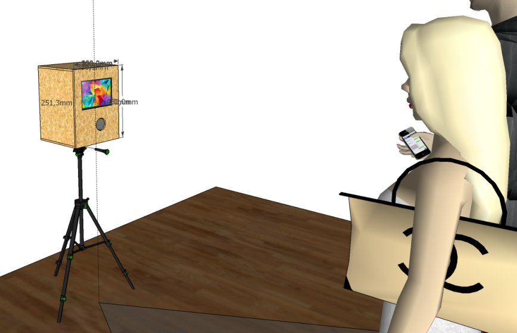

Embedded Photo Booth
Embedded Photo Booth (Embo) enables you to build your own photobooth from scratch. To this end, we give detailed instructions in both hardware and software setup. In particular, we provide an open source implementation of a sophisticated photobooth software within this github project. The software was designed with the goal of a highly efficient, zero maintenance operation mode.
embo features a photobooth containing
The Embo is triggered wirelessly using a remote control for the camera.
In order to achieve high quality pictures, we suggest (and instruct you) to use a background canvas and an indirect flash (for example, a reflective umbrella or a large softbox). We usually use a white background canvas and flash it from behind in order to remove shadows and other imperfections of the canvas.
At first, you need to build a container that hosts the camera, the screen (i.e., the tablet), the wifi router and the embedded board. In order to get a rough impression of the container that you will build, you can download the corresponding SketchUp model here: Photobooth-Sketch.skp 
From the outside, Embo looks like this: !(images/embo-ext1.jpg) !(images/embo-ext2.jpg) !(images/embo-ext3.jpg) !(images/embo-ext4.jpg)
I used medium-density fiberboard (MDF) wood, 9mm thick, in order build the box. Simple woodscrews are used to affix the boards. Make sure that you pre-drill all holes before you affix the screws in order to avoid splicing the wood. Also, I suggest to countersink the screws in order to avoid that the screw-heads stand out. After the box was build, I painted it with acrylic paint. I diluted the paint with water in order to create a paint that lets you see the vein of the wood of the MDF fiberboard.